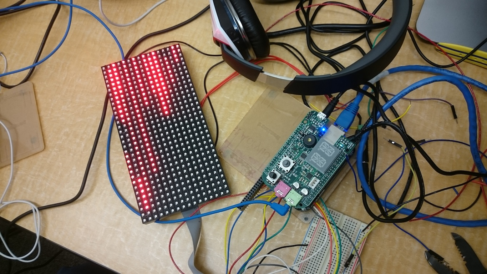

Select from the following year:
Embedded Music Player
Embedded Systems Development
C, HTML, JavaScript
Fall Emergency Distress System
Embedded Systems Development
"Capstone (Senior) Project"
Python, HTML, JavaScript
Audify
iOS Apps Development
"SFU WEG-WICS Hackathon: Accessibility"
Objective-C
Morsecode
Embedded Systems Development
(Kernel Driver)
C
Process-Ancestor Sys-call
Linux Kernel Development
C
Whack A Mole
Web Development
HTML, JavaScript
RISC Processor
Digital Systems Design
VHDL
Embedded Music Player

- Managed a group of three in creating an embedded music player with a web interface and visualizer using BeagleBone and an LED Matrix
- Worked on the LED Matrix module that can light-up depending on signal level of the music that's currently playing
- Created a "How to Guide" to use the LED Matrix for BeagleBone which can be viewed here with its source code here
Fall Emergency Distress System

- Designed an embedded system that is able to automatically detect fall, and send data to a remote server
- Worked mostly on the software component of the embedded applications which includes design, development, and integration
- Documented, presented and demonstrated the project which garnered positive remark from reviewer
Audify


 Link to project on BitBucket
Link to project on BitBucket
- Developed an iOS Application using Objective-C in a team of four to improve accessibility for people with visual impairment
- Used image processing framework Tesseract OCR to process images into readable strings followed by AVFoundation framework to translate the strings into speech
- Presented and demonstrated the end product to approximately 30 people including the judges
Morsecode (Kernel Driver)
- Developed a loadable Linux kernel 'miscellaneous' driver that can flash up morse-code pattern on BeaagleBone's LED based on user input and user's chosen parameters
- Coded 70 lines of 'write' method which translated strings into LED-lit Morse code.
- Implemeted 'read' method that generate the most reccent morse-code transmitted
- Added a proc interface that produced` statistic regarding the driver since it was loaded
Process-Ancestor Sys-call
- Hacked a Linux kernel and added a system call that allowed calling program to get various information regarding the current process up to ancestors process
- Utilized Linux kernel API to check the data passed by user are safe (not NULL, and within the correct segment of memory)
- Created a user-space multi-processes test program to ensure the functionality of the system call
Whack A Mole
 Link to demo
Link to demo
- Planned, researched, and developed of a simple web game in which player scores by hitting ‘mole’ that appears on 3x3 holes
- Added JavaScript functions that use an HTML5 audio as the timer for the game, by utilizing the audio duration as the game duration
RISC Processor
 Link to project on GitHub
Link to project on GitHub
- Led and managed a team of three in designing a RISC processor data path using VHDL to be mapped on DE2-115 FPGA board
- Designed each components of the data path: PC Logic, ALU, Multiplier, Instruction Decoder, MUX, Memory Logic, and Register File
- Created test bench for each components to minimize the risk of getting unexpected result during port mapping design on FPGA board
- Presented the design and demonstrated FIR filter calculation on the programmed FPGA’s Seven Segment, which exceeded expectation
Jingle All the Way
Bare Metal Application Developement
C, ARM Assembly
Hash Table with Seperate Chaining
Data Structures Implementation
C++
XMODEM File Transfer Protocol
Real Time and Embedded Systems Development
C, C++
Jingle All the Way
- Programmed ARMv7I Cortex-A9 on Zedboard in embedded C and inline assembly (seperately) to build configurable alternating LED pattern
- Improved the program which allow user to configure the LED pattern by inputting their own pattern using the switch control
- Provide guidance for teammate in debugging, testing and creating presentation that discuss the code in detail by bringing focus to time–cost tradeoff aspects
Hash Table
Link to project on GitHub
- Implemented Hash Table class, a type of data structure in which key is used to map array in order to store data efficiently and less costly
- Applied Horner’s method to create a hash function to map values into appropriate locations in the array
- Developed and utilize Linked List to use separate chaining in order to avoid collision
XMODEM File Transfer Protocol
- Led and managed a group of two in developing a file transfer protocol using C on eclipse-based tools for QNX, a POSIX-compliant RTOS
- Divided task accordingly, guided team throughout the project, and resolved issues when necessary
- Implemented concepts such as multithreaded processing, data sharing, sockets, message passing, priority inheritance, synchronization, scheduling, timers, and interrupts
Characterization of MOSFET and MOS Amplifier
- Used the SPA machine to get the characteristic graph (ID vs VDS and ID vs VGS) of the PMOS and NMOS to extract the r0, Vt, and constant ‘k’ from the graph and compared those values with the data sheet values
- Constructed circuits based on the schematic diagram assigned to obtain the experimental values of Vt and a constant ‘k’ by using function generator and oscilloscope.
- Designed a small signal diagram on LTSPICE using the results collected from the SPA to determine the gain of the NMOS amplifier
Signals in Frequency Domain
- Created a MATLAB function that is able to read a WAV file and perfrom FFT on the signals
- Learned how signals changed in frequency domain depending on the pitch of the sound